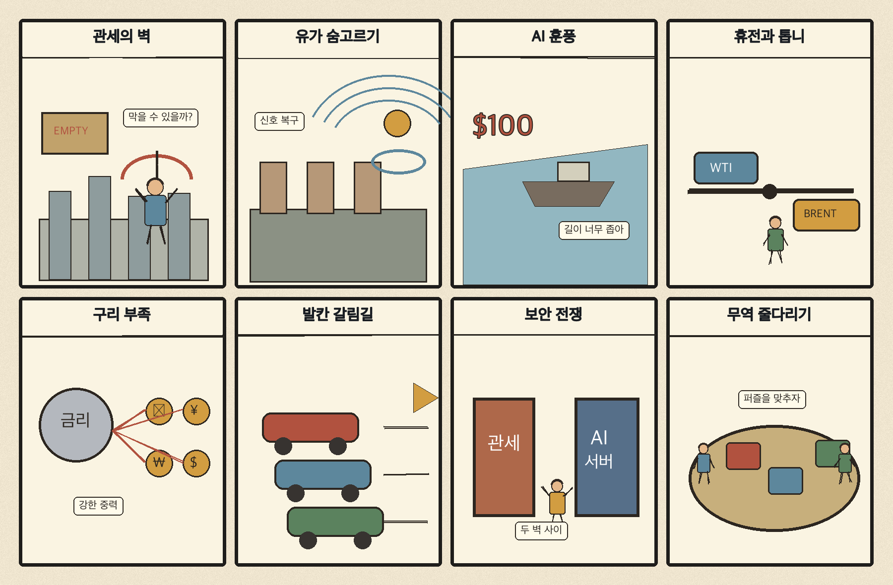
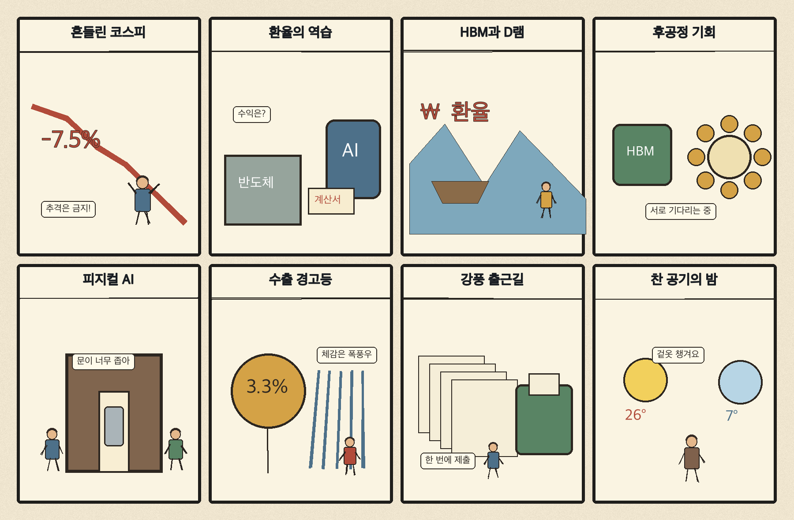

01
인텔 · 87.93→90.47달러 · +2.88%
내용요약 반도체주 전반의 위험선호 회복 속 시가 대비 +2.88%로 조사군 최상위였습니다.
예상여파 국내 반도체에도 심리상 우호적이지만 개별 기업의 실적과 수급을 별도로 확인해야 합니다.
MORNING_BRIEFING_20261027
작성 시각: 2026-10-27 06:34 KST · 직전 미국 정규장과 2026-10-27 KST 당일 공개 기사 기준
직전 미국 정규장인 10월 26일 뉴욕증시는 다우 +0.28%, S&P 500 +0.70%, 나스닥 +0.83%로 상승했습니다. 앤트로픽 상장 기대와 반도체 강세가 위험선호를 되살렸고, 국제유가는 중동 긴장 완화 기대에 115달러대로 후퇴했습니다. 다만 전일 KOSPI -1.46%, KOSDAQ -3.26%의 약세와 원화 변동성을 감안하면 오늘은 미국 기술주 훈풍의 국내 확산 여부를 외국인 현·선물 수급으로 확인해야 합니다.
| 지수 | 종가 | 등락률 | 한국 증시 시사점 |
|---|---|---|---|
| 다우존스 | 52,361.58 | +0.28% | 경기민감주도 소폭 회복 |
| S&P 500 | 7,676.77 | +0.70% | AI·반도체 투자심리 개선 |
| 나스닥 종합 | 26,169.38 | +0.83% | AI·반도체 투자심리 개선 |
앤트로픽 IPO 기대와 반도체 강세가 기술주를 밀었습니다.
중동 외교 기대에 고점에서 물러났지만 위험 프리미엄은 높습니다.
전일 시가 대비로도 -0.54%, KOSDAQ은 -2.02%였습니다.
국내 하락 추세와 필수 검증 데이터 부족으로 현금 관망입니다.
10월 26일 보고서는 미국 증시 하락·고유가와 필수 수급·컨센서스·유사 조건 표본 부족으로 공식 추천을 내지 않았습니다. 사후에 종목을 추가하지 않습니다.
| 시장 | 종가 | 등락률 | 기준 |
|---|---|---|---|
| KOSPI | 5,469.47 | -1.46% | 10월 26일 · 시가 대비 -0.54% |
| KOSDAQ | 727.21 | -3.26% | 10월 26일 · 시가 대비 -2.02% |
| 다우존스 | 52,361.58 | +0.28% | 미국 10월 26일 정규장 |
| S&P 500 | 7,676.77 | +0.70% | 미국 10월 26일 정규장 |
| 나스닥 종합 | 26,169.38 | +0.83% | 미국 10월 26일 정규장 |
인텔 +2.88%, 마벨 +2.08%, AMD +1.63%로 조사군에서 강했습니다.
로켓랩이 시가 대비 +2.36%로 상승했습니다.
유나이티드헬스가 시가 대비 -1.98%로 조사군 최하위였습니다.
넷플릭스가 시가 대비 -1.93%로 약했습니다.
내용요약 반도체주 전반의 위험선호 회복 속 시가 대비 +2.88%로 조사군 최상위였습니다.
예상여파 국내 반도체에도 심리상 우호적이지만 개별 기업의 실적과 수급을 별도로 확인해야 합니다.
내용요약 성장주 반등 속 시가 대비 +2.36% 상승했습니다.
예상여파 국내 우주항공주는 미국 단일 종목 움직임보다 실제 수주와 발사 일정을 우선 봐야 합니다.
내용요약 인공지능 네트워크·반도체 기대 속 시가 대비 +2.08% 올랐습니다.
예상여파 데이터센터 공급망 심리에는 긍정적이지만 높은 변동성과 밸류에이션 부담을 함께 봐야 합니다.
내용요약 시가 대비 -1.98%로 조사군에서 가장 약했습니다.
예상여파 방어주 안에서도 실적·정책 민감도에 따라 종목 차별화가 커질 수 있습니다.
내용요약 기술주 상승장에서도 시가 대비 -1.93%로 부진했습니다.
예상여파 미디어·구독 산업은 성장률과 콘텐츠 비용에 대한 시장 눈높이를 점검해야 합니다.
미국 기술주 상승과 유가의 고점 후퇴는 반도체·데이터센터 공급망에 단기 우호적입니다. 그러나 전일 KOSPI는 시가 대비 -0.54%, KOSDAQ은 -2.02%로 장중 약세가 이어졌고 종가 기준 각각 -1.46%, -3.26% 하락했습니다. 개장 초 반도체 반등이 지수 전반으로 확산되는지, 원·달러 환율과 외국인 선물 매도가 완화되는지 확인하기 전에는 갭 상승 추격을 피하는 편이 낫습니다.
오늘은 추천 없음 — 현금 관망
전일까지의 외국인·기관 수급, 컨센서스 변화와 30건 이상 유사 조건 표본을 함께 확보해 종합점수 75점·상승확률 60%·예상 손익비 1.5를 모두 검증한 종목이 없습니다. 전일 KOSDAQ -3.26%와 원화 변동성 때문에 장전 반등 기대만으로 진입하기 어렵습니다.
관심 연결종목 반도체 후공정·데이터센터 전력·사이버보안은 관찰 대상일 뿐 매수 추천이 아닙니다. 과도한 갭 상승 종목은 추격매수를 금지합니다.
브렌트유 115달러대 하락이 이어지는지와 운송로 돌발 변수를 봅니다.
전일 급락 뒤 매도 압력이 완화되는지 확인합니다.
삼성전자·SK하이닉스 확정 실적 전 HBM·설비투자 기대 과열을 점검합니다.
앤트로픽 상장 기대가 실제 반도체·클라우드 수요 전망으로 이어지는지 봅니다.
핵심 요약: 앤트로픽의 상장 추진이 인공지능 투자심리를 되살렸고, 데이터센터의 전력·원전·냉각과 메모리 공급 재편이 산업의 다음 병목으로 부상했습니다. 연결기기 보안도 비용이 아니라 필수 인프라가 되고 있습니다.
내용요약 클로드 개발사 앤트로픽이 나스닥 상장 절차에 들어갔다는 연합뉴스의 당일 보도입니다. 기업가치와 자금조달 규모가 인공지능 산업의 투자심리를 가늠할 새 기준이 됐습니다.
예상여파 대형 인공지능 기업의 상장 기대는 반도체·클라우드 수요에 우호적이지만 높은 가치평가와 투자 회수 속도 논쟁도 키울 수 있습니다.
내용요약 미국 대형 데이터센터가 지역 경제와 고용·전력 인프라를 바꾸는 현장을 다룬 보도입니다.
예상여파 한국도 단기 설비 공급을 넘어 전력망·냉각·인재를 묶은 장기 데이터센터 전략이 필요해집니다.
내용요약 HBM 중심 증설로 범용 D램 공급이 빠듯해지며 구형 메모리와 관련 장비의 가치가 재평가된다는 보도입니다.
예상여파 메모리 가격에는 우호적일 수 있으나 일시적 공급 부족인지 구조적 믹스 변화인지 확인해야 합니다.
내용요약 미국에서 대형 원전 10기의 선발주와 금융지원 움직임이 전해졌습니다. 인공지능 데이터센터 전력 수요가 원전 투자 논리를 강화하고 있습니다.
예상여파 원전 기자재·전력망 공급망에 장기 기회가 될 수 있지만 실제 발주와 인허가 일정을 분리해 봐야 합니다.
내용요약 의료기기와 전기차까지 소프트웨어 연결이 확대되며 사이버 보안이 안전 규제의 핵심으로 떠오른다는 연합뉴스 보도입니다.
예상여파 제품 보안 인증과 공급망 점검 비용이 늘고 보안 솔루션 수요는 구조적으로 확대될 가능성이 있습니다.
핵심 요약: 미국의 50% 관세 경고가 교역 불확실성을 키운 반면 중동 외교 움직임은 국제유가를 115달러대로 낮췄습니다. 우크라이나·발칸의 정치 불확실성과 구리 공급 부족이 안보와 산업비용을 동시에 압박합니다.
내용요약 미국이 자국을 이용한다고 판단하는 교역 상대에 관세를 50%까지 높일 수 있다는 발언을 전한 당일 보도입니다.
예상여파 대미 투자와 현지생산이 관세 방패가 될 것이라는 기업 가정이 흔들리며 공급망 비용의 불확실성이 커질 수 있습니다.
내용요약 사우디와 이란 사이의 외교 움직임으로 국제유가가 브렌트유 115달러대로 물러났다는 당일 보도입니다.
예상여파 에너지 가격 부담은 다소 완화됐지만 유조선·드론 관련 돌발 변수 때문에 높은 위험 프리미엄은 이어질 수 있습니다.
내용요약 러시아가 제한적 휴전을 언급하면서도 군사작전 중단에는 선을 그었다는 당일 해외 보도입니다.
예상여파 협상 신호와 현장 긴장이 공존해 유럽 에너지·방산 시장의 변동성이 지속될 수 있습니다.
내용요약 세르비아의 권력 변화 가능성과 유럽연합 가입 경로가 발칸 정세에 미칠 영향을 다룬 보도입니다.
예상여파 발칸 지역의 제도 통합 속도와 대외 노선 변화가 유럽의 안보·투자 환경에 영향을 줄 수 있습니다.
내용요약 구리 부족과 관세 정책 혼선 속 글로벌 원자재 상사의 이익이 커졌다는 당일 보도입니다.
예상여파 전력망·데이터센터 증설에 필요한 구리 가격과 조달 비용이 제조업 투자 계획의 핵심 변수가 될 수 있습니다.

핵심 요약: 국내 증시는 환율과 외국인 수급에 흔들리고 있지만 반도체 후공정과 피지컬 AI 정책은 중장기 산업 기회를 넓히고 있습니다. 오늘은 강풍과 밤사이 기온 급락에도 대비해야 합니다.
내용요약 금리·전쟁·환율 충격이 겹친 상황에서 한국 증시의 변동성이 다른 시장보다 커진 이유를 짚은 당일 분석입니다.
예상여파 외국인 수급과 원화 안정이 회복되지 않으면 대형주 중심의 급등락이 반복될 수 있습니다.
내용요약 미국 주식에 투자한 국내 투자자가 주가뿐 아니라 환율 변화로 손익 변동을 겪는 상황을 다룬 보도입니다.
예상여파 해외자산 투자는 방향성 베팅과 환위험을 분리해 관리해야 하며 환율 급변 때 레버리지 부담이 커집니다.
내용요약 삼성전자와 SK하이닉스의 증설 흐름 속 후공정 장비 업종의 수혜 가능성을 다룬 뉴시스 보도입니다.
예상여파 실제 발주·수주잔고 확인 전 단순 기대만으로 관련 종목을 추격하지 않는 것이 중요합니다.
내용요약 국토교통부가 로봇과 인공지능을 결합한 피지컬 AI 건설산업 육성에 나선다는 보도입니다.
예상여파 건설 자동화·안전관리 시장 확대가 기대되지만 실증사업과 조달 예산의 연속성을 확인해야 합니다.
내용요약 전국에 강한 바람이 불고 밤부터 기온이 크게 내려가 체감온도가 낮아진다는 당일 기상 보도입니다.
예상여파 출퇴근 안전과 건강관리에 유의하고 항공·해상 운항 및 야외 작업 일정을 점검해야 합니다.
